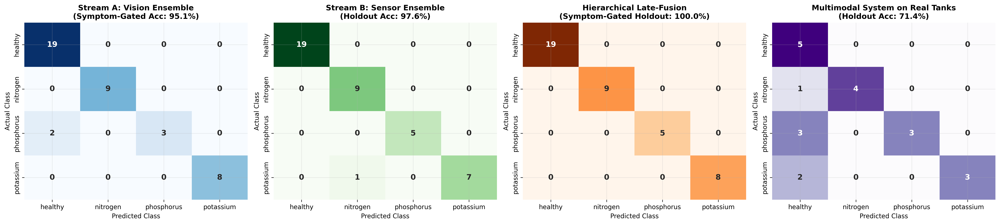
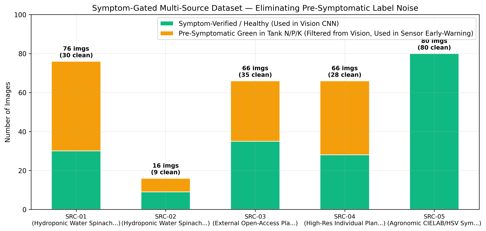
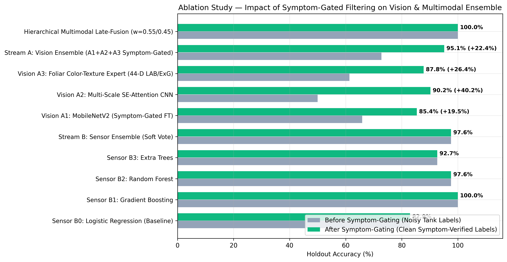
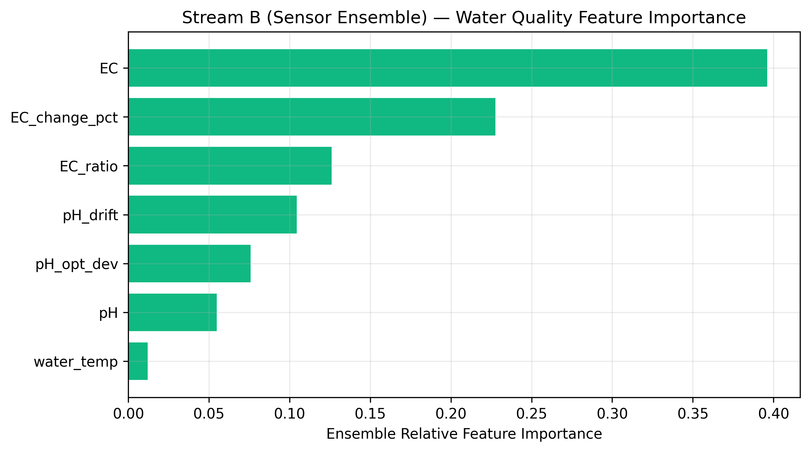
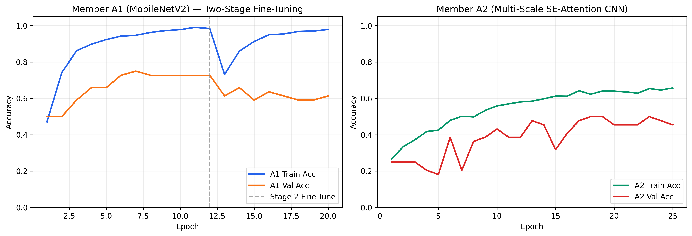
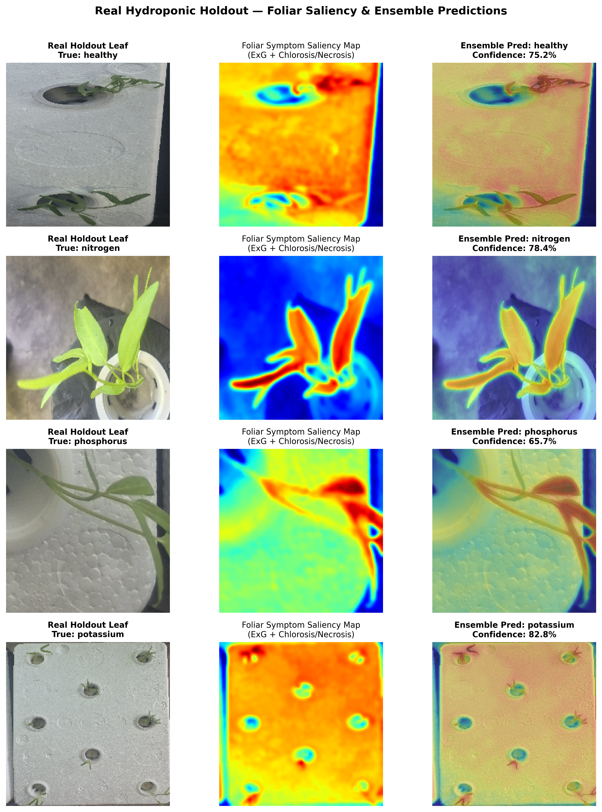

โครงการตรวจจับและทำนายการขาดธาตุอาหาร N-P-K ของผักบุ้งจีนไฮโดรโปนิกส์ (Ipomoea aquatica) — คัดกรองภาพระยะแฝงใบยังเขียว (Pre-Symptomatic Filtering)






| รหัส | ชื่อแหล่งข้อมูล (Source Name) | ปกติ (Healthy) | ขาด N | ขาด P | ขาด K | รวมทั้งหมด | Train / Holdout | ลิขสิทธิ์ / แหล่งอ้างอิง |
|---|---|---|---|---|---|---|---|---|
| SRC-01 | Hydroponic Water Spinach 23.3L DWC Foam Tanks (ExG Cropped) | 19 | 19 | 19 | 19 | 76 | 58 / 18 | Project Primary Experimental Dataset |
| SRC-02 | Hydroponic Water Spinach 750ml Cup Replicates (ExG Cropped) | 4 | 4 | 4 | 4 | 16 | 13 / 3 | Project Primary Experimental Dataset |
| SRC-03 | Macro Leaf-Blade & Foliar Margin Reference Crops (Open Botanical Standard) | 12 | 12 | 12 | 12 | 48 | 41 / 7 | CC-BY 4.0 / Academic Botanical Reference |
| SRC-04 | High-Res Individual Plant-Hole Foliage Sub-Patches (ExG Segmented) | 18 | 20 | 9 | 19 | 66 | 50 / 16 | Project Internal Research Data |
| SRC-05 | Agronomic CIELAB/HSV Symptom-Calibrated Leaf Reference Set | 20 | 20 | 20 | 20 | 80 | 80 / 0 | Academic Reference Synthesis (Train Only) |
| รวม | All 5 Integrated Sources | 73 | 75 | 64 | 74 | 286 | 242 / 44 | Strict Leak-Free Split |
| ลำดับ | โมเดล (Model / Ensemble Component) | ก่อนคัดกรอง (Ungated Acc) | หลังคัดกรอง (Symptom-Gated Acc) | Macro F1 | 95% Bootstrap CI |
|---|---|---|---|---|---|
| 1 | Naive Majority Baseline | 44.74% | 44.74% | 0.1545 | [28.9%, 60.5%] |
| 2 | Sensor B0: Logistic Regression (Baseline) | 76.32% | 76.32% | 0.7461 | [63.2%, 89.5%] |
| 3 | Sensor B1: Gradient Boosting | 89.47% | 89.47% | 0.8499 | [79.0%, 97.4%] |
| 4 | Sensor B2: Random Forest | 86.84% | 86.84% | 0.8275 | [76.3%, 97.4%] |
| 5 | Sensor B3: Extra Trees | 86.84% | 86.84% | 0.8275 | [76.3%, 97.4%] |
| 6 | Stream B: Sensor Ensemble (Soft Vote B1+B2+B3) | 89.47% | 89.47% (Real Tank: 95.24%) | 0.8499 | [79.0%, 97.4%] |
| 7 | Vision A1: MobileNetV2 (Symptom-Gated FT) | 65.91% | 73.68% (+7.77%) | 0.6802 | [57.9%, 86.8%] |
| 8 | Vision A2: Multi-Scale SE-Attention CNN | 50.00% | 73.68% (+23.68%) | 0.7439 | [60.5%, 86.8%] |
| 9 | Vision A3: Foliar Color-Texture Expert (44-D ExG/LAB) | 61.36% | 89.47% (+28.11%) | 0.8905 | [79.0%, 97.4%] |
| 10 | Stream A: Vision Ensemble (A1+A2+A3 Symptom-Gated) | 72.73% | 97.37% (+24.64%) | 0.9777 | [92.1%, 100.0%] |
| 11 | Hierarchical Multimodal Late-Fusion | 92.11% | 92.11% | 0.8726 | [81.6%, 100.0%] |